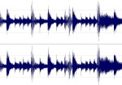

7th
March
2007

The Amen Break
The Amen Break is the Wilhelm Scream of modern music: these six little seconds of drum solo have been sampled — in both whole form and in Frankenstein-esque reconstructions — so often that it has practically become an instrument in itself. In 2004, Nate Harrison created an 18-minute documentary about the history of the use of this ubiquitous drum break. It’s a bit long, but at least listen to the first couple of minutes, so you can hear the break, say “oh yeah! I know that!,” and learn where it originally came from. The whole piece is interesting, though; toward the end, the focus turns to the implications of sampling and copyright laws on creative expression and capitalism. I first found it on BoingBoing a year ago, but was reminded of it today when Cynical-C posted it.
posted in Music |
7th
March
2007
Pondering how someone came to the conclusion to have this tattooed on themselves has caused my brain to seize up. [via Booberry Alarmclock]
posted in Art |
6th
March
2007
Waffle House cheat sheet
This is fascinating: Waffle House uses a complex system of arranging condiment packets on plates to communicate order instructions. From nickgraywfu on Flickr, via BoingBoing.
posted in Food |
5th
March
2007
“Protein Synthesis: an Epic on the Cellular Level” is a short film created in 1971 at Stanford University. The intro features Dr. Paul Berg, who would go on 9 years later to win the Nobel Prize for Chemistry. As much as I enjoy Dr. Berg’s intro, things really start to get running a bit past minute 3, when the hippies show up, demonstrating protein synthesis “using the dance idiom.” And balloons. And smoke. And a drum circle. It’s actually a very good demonstration of how protein synthesis works, and apparently it’s still shown in classrooms today. I first saw this film a bit over a decade ago, when I was working at ZymoGenetics.
posted in Midcentury, Science!, Space Age |
5th
March
2007
posted in Miscellaneous |
5th
March
2007
This amazing video for Scissor Sisters’ “She’s My Man” was done all in one take — the camera didn’t move, and the speed of the film was not altered. The movement and effects in the video are made possible by black-clad kuroko stagehands. The video was directed by Nagi Noda, who was also responsible for that disturbing exercising poodles video.
There’s a slightly higher-quality version at the Scissor Sisters website, but it’s mired in Flash, so I can’t link directly to it. Bah.
posted in Art, Music |
5th
March
2007

Lionel Richie rendered in lush velvet,
from
Walsh on Flickr
I want to share something beautiful with you. I want to share Lionel Richie, in black velvet.
A friend of mine has one of those wonderful homes where it takes you two hours to even notice the plastic Jesus with a cat’s head, because there is just so. much. weird.stuff. She has it all very tastefully displayed, though, right down to the neatly organized wall of Marwal heads.
But her bathroom is where it really all comes together. Lionel Richie is there right over the throne, rendered in lush velvet, casting a loving and watchful eye as you go about your business. From the other side of the room, a red velvet-flocked mini-bust of Mao Tse Tung glowers at the two of you. He’s clearly jealous that Lionel Richie got top billing.
The velvet Lionel Richie masterpiece pictured here isn’t hers, but is one I found on Flickr, posted by Walsh. Small world — in his comment on this picture, he links to an article that makes reference to there being a cache somewhere of Velvet Lionels, and the article appears to have been written by a friend of mine. Lionel, you work in such mysterious ways!
posted in Art |
4th
March
2007
For my first post here on Junkyard Clubhouse I’d like to celebrate one of my favorite staples of the Space Age: The Nixie Tube. The Nixie Tube is the vacuum-tubesque ancestor of the digital readout. Once the mainstay for counting down Moon Launches and Doomsday Devices with, the Nixie Tube is now pretty much only favored by many a retro-minded hobbyist.
There’s some really cool commercial and homemade projects out there, including the Nixie Tube Wristwatch, some very cool clocks, and even some super old calculators. You can find a ton of cool Nixie-related auctions on eBay, and Wikipedia has a great entry for them too. Yay Nixie Tubes!
posted in Midcentury, Space Age |
4th
March
2007
The Hacienda Barmobile, from Tikiranch’s blog
I want this. Doesn’t it look like a life-size version of a kid’s toy? An alcoholic kid’s toy. Found at Tikiranch’s blog.
posted in Midcentury |
4th
March
2007
This has been burning a hole in my pocket for a while now. It’s an animated advertisement for drive-in movie theaters, pushing an intermission trip to the snack bar, sponsored by Dr. Pepper. It was created by Keitz & Herndon, a little animation studio in Dallas, in the early 1950s.
I first saw it on the Cartoon Modern blog. If you dig this, you’ll also dig the book Cartoon Modern. How can you not dig something so… frosty?
[UPDATE] SideShowCarny, who uploaded this clip to YouTube, reports that it came from one of the volumes of “Hey Folks! It’s Intermission Time!” from Something Weird. They sell them on DVD for $10. Do a search on “intermission” to find them.
posted in Animation, Midcentury |


 Cartoon Modern: Style and Design in 1950s Animation
Cartoon Modern: Style and Design in 1950s Animation Classic Drive-In Theater Intermission Film Clips
Classic Drive-In Theater Intermission Film Clips
{kind=link}